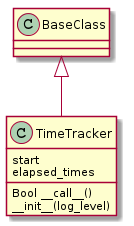
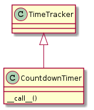

The Countdown Timers are meant to be used by the composites and components to keep track of elapsed (and sometimes remaining) time. The Time Tracker is used to keep track of how long execution is taking. This is meant primarily for someone wanting to estimate future times by looking at past logs. The CountDown Timer also keeps track of execution time but is meant to also keep track of whether the composite should repeat or not (based on remaining repetitions or time).
The TimeTracker:
- Tracks start time, stop time, elapsed times
- Logs min, Q1, median, Q3, max elapsed times
- Returns True when running and False when stopped at __call__

| TimeTracker.__init__([log_level]) |
|
||
| TimeTracker.log | The logger method indicated by the log_level | ||
| TimeTracker.append(item) | Appends the item to the times array | ||
| TimeTracker.percentile(percentile) | calculates the percentile (e.g. 50 gets the median (the 50% item)) | ||
| TimeTracker.__call__() | The main interface - starts and stops (toggles) the timer |
The expected way to use the TimeTracker is as a sentinal in a while loop:
def run(self):
# assumes self.t is a TimeTracker instance
while self.t():
time.sleep(1)
return
This would append a timedelta of about 1 second to the TimeTracker’s times array everytime run is called, and log the current elapsed time and the basic running statistics (which in this case shouldn’t show any variance)
The CountdownTimer is an extension of the TimeTracker that takes a repetitions value and decrements it on each call, returning True until it is less than or equal to 0.
I am also supporting time-outs (setting a total time or an end-time). The total_time should be a timedelta while the end_time should be a datetime (or something that acts like it). This adds a bit of complication so I’ve chosen a hierarchy where the end-time takes first precedence (if you reach the time quit even if there’s more repetitions or time), and the total-time take precedence over the repetitions.
To decide on the behavior of the CountdownTimer you set a combination of the three parameters. In the following table 0 means the attribute is None and 1 means it was set to an appropriate value.
| end_time | total_time | repetitions | Interpretation |
|---|---|---|---|
| 0 | 0 | 0 | time_remains always False (check-rep should fail) |
| 0 | 0 | 1 | Only repetitions are used |
| 0 | 1 | 0 | Run for the amount of time given |
| 0 | 1 | 1 | Use repetitions but quit if out of time |
| 1 | 0 | 0 | Run until the end-time is reached |
| 1 | 0 | 1 | Use repetitions but quit if end-time is reached |
| 1 | 1 | 0 | Use total-time but quit if end-time is reached |
| 1 | 1 | 1 | Use repetitions but quit if total-time or end-time run out |
Note
Because I decrement after the start-time is set, this will always return True on the first call (it assumes you want at least one repetition).

| CountdownTimer([repetitions, end_time, ...]) | A time-tracker that counts down |